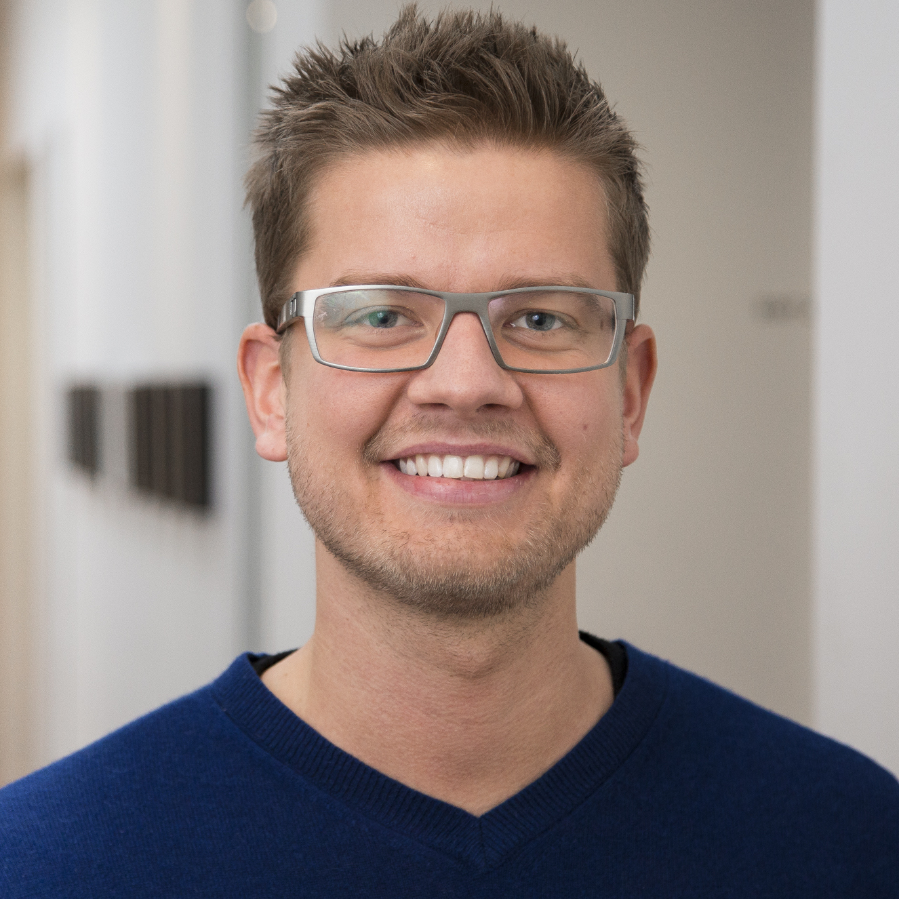

Billedredigering i Photoshop,
Aftereffects, Premier Pro & Sony XPRI Editing.
Om

Ulrik Agerbeck
Fotograf
Kapow Bredbånd
Fiktivt
reklameprojekt
I denne produktion har mine faglige opgaver været Lysassistent, A-Foto og Post-lyddesigner.
Under optagedagene har jeg haft rollen som lysassistent. Jeg har bidraget til at filmen fik det
rigtige look vi ønskede i forhold til lysplanen.
I forløbet fandt vi ud af at lampernes
forskellige karakteristika var yderst vigtige i forhold til
den måde vi ville skyde på. Fx skød vi det meste
i 150 eller 240 fps, her er det vigtigt at have
lamper der ikke forårsager unødvendig og ukontrolleret flikker i billederne.
Vi havde på et tidspunkt lavet slowmotion
billeder, hvor vi havde lyssat ved hjælp af 2
2kw blonder og 2 650 w fresnell. De to 650’ere
skabte meget flikker da de glødetrådspærer der lyste simpelthen ikke var varme nok, blonderne
skabte ikke noget problem. Vi konkluderede
således at hvis man skal optage slowmotion skal
man have fat i glødetrådspærer helst over
2000 w eller HMI lamper med anti-flikker
funktion indbygget.
Det var en fornøjelse at lege med de forskellige
lampeplaceringer i forhold til hvert enkelt
skud, og der blev rykket en del rundt på lyset
så det passede til hvert enkelt indstilling,
således at lyset ramte vore statister på en måde
vi var tilfredse med. Jeg oplevede også
lyssætningens effektivitet på egen krop, da jeg
på flere af indstillingerne agerede som statist
eftersom vi havde haft vanskeligheder ved at
finde nok statister.
I en kort periode i optagedagene havde jeg også
hænder på kameraet, således at jeg selv fik
mulighed for at lege med F5 kameraets mange
indstillinger. Jeg skiftede mellem at optage i
150 fps med en shutter på 1/250 og 240 fps med
en shutter på 1/500.
I postproduktionen har jeg leveret filmens
lyddesign. Planen var at filmen skulle have et
lydunivers der bestod af hurtige skift mellem
slowmotion, speedede billeder og få normale
lyde, dét kombineret med forskellige lydeffekter
til slag, vejrtrækninger, skridt på gruset
betongulv, skud, lade en pistol osv. Mange af
effekterne såsom vejrtrækning, skridt på
betongulv osv. har vi optaget i biografen. Til
de fleste optagelser, inklusiv speak til
slutningen har vi brugt en AKG 414 mikrofon.
Vi ønskede at skabe et univers hvor man tydeligt
kan høre at vi befinder os i en kælder eller
hal af en art med en masse jublende tilskuere.
Vi ville skabe en fornemmelse af at vi hele
tiden bevægede os ind og ud af slowmotion.
Vi har i denne forbindelse været yderst
inspireret af flere af instruktør Guy Ritchies
kampscener i hhv. Snatch og Sherlock Holmes.
At arbejde med protools har mildest talt været
en udfordring, eftersom den undervisning vi
har fået har været meget begrænset. Learning
curve har således været lang og en anelse træg,
men jeg har nogenlunde lært at navigere rundt i
det nu og har brugt meget tid på at lege med
effekter, panorering, equalizer og compressor.
Jeg føler at jeg især i de to sidstnævnte er
blevet væsentligt stærkere.
I løbet af forløbet er jeg rendt ind i flere
udfordringer, men jeg har løst dem dels med
hjælp fra vores lærer og gæstelærer men også ved at sætte
mig grundigt ind i tingene.
Indkvartering af flygninge
Nyhedsindslag bragt
i TV2 Lorry.
Type: Nyhedsindslag
Roller: Foto, Lyd, Redigering & Lys
Kamera: Sony XDCAM PMW-500, HD
Lyd: Wisycom håndmicrofon og klipsmicrofon
Lys: Sungun IDX X5 +
Brightcast Storm LED Lampe
Vi skulle lave et indslag om to flygtninge som boede
hos en privatperson i Farum. Vi havde 3
locations: Villaen i Farum, et kontor i Farum og
Furesø rådhus. Optagelserne startede kl. 15 og
sluttede kl. 17. Det gav mig to timer til at lave
sync med Borgmester, kommunal administrator
for projektet, kvinden der ejer huset og begge
flygtninge. I disse indslag er man altid i et
kolossalt tidspres, derfor gælder det om at
koordinere sin tid rigtigt og effektivt ude på
locations. Jeg er nødt til at vide præcis hvilke
slags indstillinger jeg skal lave for at kunne
stykke en historie sammen, således at jeg ikke laver
for lidt, men heller ikke kommer hjem
med alt for meget materiale.
Tidspresset gør det også vanskeligt at lave en
ordentlig lyssætning. På udendørs syncerne i
dette indslag har jeg valgt at stille det op således
at det naturlige lys komplimenterer vores
syncperson i bedst mulig balance med baggrunden. Til
indendørs lyssætningerne har jeg
brugt en LED lampe som hovedlys og brugt
omkringliggende practicals til at forsøge at ramme
forudsætningerne for en trepunktslyssætning bedst
muligt. Jeg har også redigeret indslaget.
App Industri
Nyhedsindslag bragt
i TV2 Lorry
Type: Nyhedsindslag
Roller: Foto, Lyd, Redigering & Lys
Kamera: Sony XDCAM PMW-500, HD
Lyd: Wisycom håndmicrofon og klipsmicrofon
Lys: Sungun IDX X5 + Arri low
caster LED Lampe
Til dette indslag har jeg haft lidt mere tid end hvad
man sædvanligvis har til et nyhedsindslag.
Dette gav mig tid til at kredse for
billedkompositionerne. Jeg har forsøgt at ramme det
gyldne snit efter bedste evne på kontorskuddene, herudover
har jeg leget med at lave ”indramninger,
zoomture osv.” Journalisten var især glad for det
billede hvor man ser en løber løbe forbi,
hvorefter turen ender på Endomondo kontoret. Det
første man gør når man er på en ny
location er at forsøge at danne sig et overblik, hvor
falder lyset naturligt flottest i rummet?
Hvor kan jeg lave de bedste opstillinger? Til
syncerne har jeg sat en LED lampe op og ellers
brugt det lys der var i lokalet for at skabe en
stemning.
De grafikker som optræder i indslaget har jeg selv
lavet i After Effects og er med til at skabe
større overblik i historien. Indslaget er også
redigeret af mig.
Cirkus Benneweiss
Nyhedsreportage
bragt i TV2 Lorry
Type: Nyhedsreportage
Roller: Foto, Lyd, Redigering & Lys
Kamera: Sony XDCAM PMW-500, HD
Lyd: Wisycom håndmicrofon og klipsmicrofon
Lys: Sungun IDX X5
Dette er en reportage – som er en genre der giver
nogle helt andre udfordringer. Her er man
nødt til at følge med i hvad der foregår omkring én
og forsøge at have et overblik over hvornår
man kan lave sine forskellige indstillinger. Dét at
man ikke kan være flere steder på en gang er
for alvor et problem her. Tit er man inde i et
nærbillede idet der lige pludselig sker noget
uventet og interessant et andet sted, som man
derfor ikke når at fange. Nærbilleder er rigtig
gode til at drive en historie fremad og til at
klippe ind og ud af, men ude i marken når man skal
lave reportage er de også svære at time i forhold
til hvornår man kan lave dem. Fordi man
som sagt kan risikere at gå glip af et andet
øjeblik. Det hjælper hvis fotograf og journalist er
enige om hvad indslaget skal handle om, således at
man målrettet kan følge de personer eller
begivenheder som indslaget omhandler. Lige præcis i
dette tilfælde var det svært, fordi vores
to hovedpersoner farede rundt hver for sig og
skulle forberede alt muligt. Mange af tingene
måtte vi slet ikke få lov til at se.
Almedin udvist
Nyhedsindslag bragt
i TV2 Lorry
Type: Nyhedsindslag
Roller: Foto, Lyd, Redigering & Lys
Kamera: Sony XDCAM PMW-500, HD
Lyd: Wisycom håndmicrofon og klipsmicrofon
Lys: Sungun IDX X5 +
Brightcast Storm LED Lampe
Jeg var ikke synderligt tidspresset i dette
indslag, men var udfordret af at skulle løfte et
helt
indslag inde fra et lille bitte mødelokale. Her
gælder det om at være kreativ med de forskellige
vinkler, ture man kan lave – alt for at få
indslaget til at leve en lille smule. Har forsøgt
mig på
at bygge det meget op omkring nærbilleder for at
skabe intensitet i historien.
Desuden var Almedin tydeligt rørt, og man vidste
ikke rigtig helt hvornår han ville tage sin
taske og gå. Dette skaber et mindre stress element,
simpelthen for at nå at få så meget af ham
som muligt. Jeg forsøgte at starte indslaget med
nogle soundbites fra mødet, som desværre
ikke blev så gode. Der sad en fyr til mødet med en
meget dyb stemme og han havde en evne til
at overdøve alle de andre, dét kombineret med at
Almedin snakkede meget lavt gjorde det
meget vanskeligt med brugbare soundbites. Havde
ellers lagt en klipsmikrofon i midten af
bordet ca. for at ”fange” de forskellige folk.
Marsvin i Øresund
Nyhedsreportage
bragt i TV2 Lorry
Type: Nyhedsreportage
Roller: Foto, Lyd, Redigering
& Lys
Kamera: Sony XDCAM PDW-530, HD
Lyd: Wisycom håndmicrofon og klipsmicrofon
Lys: Sungun IDX X5
Et eksempel på en reportage hvor man får meget
foræret af sine omgivelser. Det er ikke
nødvendigvis alle billeder i dette indslag der er
perfekte. Stemningen i indslaget er jeg dog
glad for samt solnedgangsbillederne. Vi var i
øvrigt også så heldige at der rent faktisk dukkede
marsvin op, men de var svære at fange på kamera
fordi de er meget sky og er kun oppe for at
trække luft i et splitsekund. Derfor blev
billederne her ret rystede fordi jeg ikke rigtig
kunne forudse hvornår de ville dukke op. Indslaget er
ikke redigeret af mig.